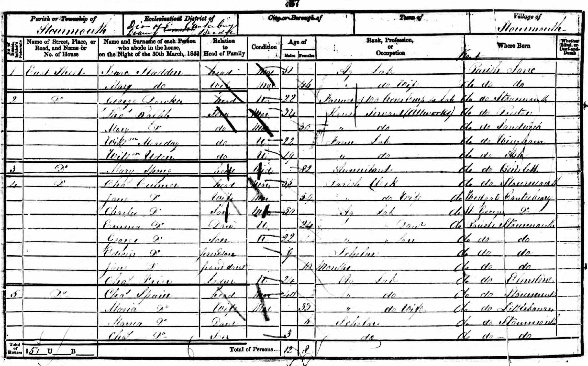
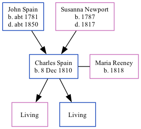

Charles Spain 1810 -
[ Home ] | [ Calendar ] | [ Surnames Index ] | [ Family History ]An agricultural laborer and the son of John Spain (a laborer) and Susanna Newport, Charles Spain, the three times great-uncle of Nigel Horne, was born in Stourmouth, Kent, England on Dec 8, 18101, was baptized there at All Saints on Dec 30, 1810 and married Maria Reeney (with whom he had 2 children: Maria and Charles) in Eastry, Kent, England around Nov 18432. On Mar 30, 1851, he lived at East Street in Stourmouth3.
Parents
- John was born c. 1781
- Susanna was born in 1787
Citations
- Kent, Canterbury Archdeaconry Baptisms - Findmypast
- England & Wales Marriages 1837-2005 - Findmypast
- 1851 England, Wales & Scotland Census - Findmypast (was age 40 and the head of the household)
Media
Charles Spain - baptism

1851 UK Census

Canterbury Baptisms Image - GBPRS-CANT-004129312-00602
Kent, Canterbury Archdeaconry baptisms 1538-1912 - GBPRS/CANT/B/96716027
1851 England, Wales & Scotland Census - GBC/1851/0005916977
England & Wales marriages 1837-2008 - BMD/M/1843/4/AZ/000600/058
Family Tree
Generated by Ged2Site. Last updated on Jul 20, 2025